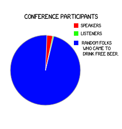
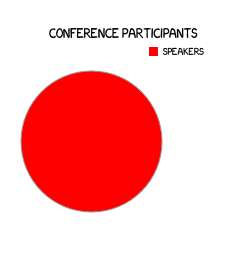

Hello, web dev folks!
Пориньте у спогади. Згадайте останню конференцію, на якій ви були. Змалюйте доповідь, що слухали. А тепер згадайте, на котрій хвилині ви заснули.
Британські вчені провели наукове дослідження, і вияволось, що 73.894% респондентів засинали на 5-тій хвилині будь-якої доповіді. Якщо лише декілька хвилин здатні тримати нас притомними, то навіщо мучитись? Чому б не влаштовувати доповіді що будуть ідеальними по тривалості? Без філософії, тавтології, сліз та соплів. Тільки рафінованих 5 хвилин хардкору! Так-так, ми говоримо про короткі доповіді п’ятихвилинки (lightning talks). Давайте візьмемо найкраще, що є в конференції і викинем все решта ;)
Але невпинні вчені на тому не зупинились. Вони провели ще одне дослідження, яке дало наступні результати: 
То ж ми подумали, а чому б не влаштувати конференцію з дещо інакшим розподілом учасників? 
Гаразд, останнє в списку, але не по важливості. Згадайте основне правило конференції — “дотерпіти до афтерпаті”. Але ж для чого? Навіщо терпіти? Чому б не пити під час зустрічі!
Правила гри:
- Лише 20 учасників;
- Усі учасники є доповідачами;
- Доповідь триває чітко 5 хвилин;
- Жодних питаннь після виступу;
- Лише практичні теми, ніякої демагогії та філософії.
Порядок виступів буде визначено за допомогою магії безпосередньо на мітапі. Перед виступом доповідач зобов’язаний випити чарівного еліксиру.
Зацікавило?
Відкинь сумніви! 20 веболюбів, 20 практичних доповідей! Just do it! Join dream team! Be a part of great community! Start your adventure time! Change your mind! Open yourself! Dive into technology paradise! Follow you dream! Он сделал ето и ви не поверите что произшло! Накачать прес за 10 дней в домашних условиях! Share your experience! Похудеть за две недели! Я вегетеріанець, не їм м’ясо і почуваю себе прекрасно!
Ти все ще сумніваєшся? Are you kidding me?! Cmn! Just do it!
Порядок подання та розгляду заявки на участь:
- Надіслати лист на helloweb1989@gmail.com. Лист має містити тему доповіді та ваші контакти (фейсбук та телефон);
- Ми розглянемо вашу заявку. Якщо ваша тема не буде продубльована іншим учасником та відповідатиме тематиці мітапу, ми надішлемо у відповідь шаблон слайдів, які слід буде підготувати до виступу;
- Прислати готові слайди слід як мінімум за день до конференції;
- Приходьте вчасно ;)